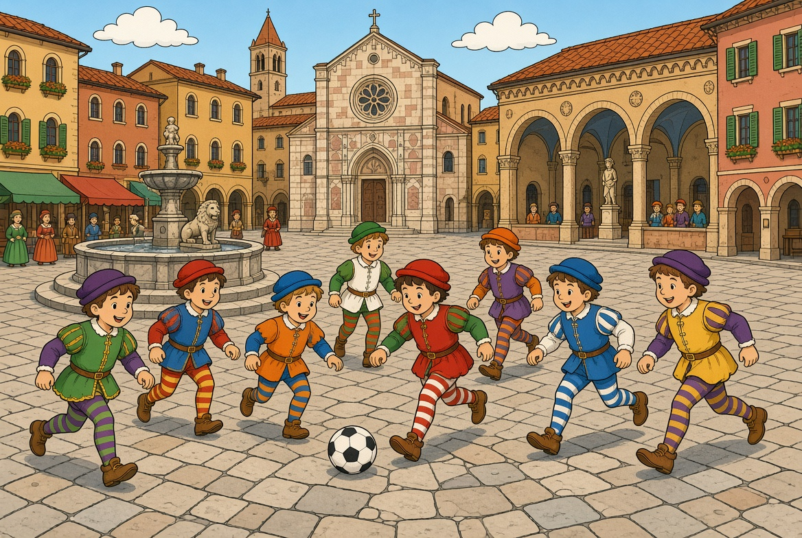

Old Football Fight
This old football game is played in Florence, in Italy. Four teams from the city play a very rough match. Pushing and grabbing are part of the game. Only local players take part.

This old football game is played in Florence, in Italy. Four teams from the city play a very rough match. Pushing and grabbing are part of the game. Only local players take part.